CodePipeline and Github for a continuous delivery and continuous integration workflow
Project Introduction
In this AWS project, I would be demonstrating the process of creating a CI/CD pipeline to facilitate the update of website files in an S3 bucket with Github as the source. This means that anytime a push is made to the Github repository, the same change would also be made to the S3 bucket. In the closure of my last project involving serving a website through CloudFront with S3 as the origin hosting the website files, I stated that S3 was unfavourable and inefficient to developers pushing changes to files in the bucket on a daily basis. This could be solved by using a version control system like Github and facilitating the updates of the website files in the S3 bucket through a CI/CD pipeline. You may be thinking, doesn't AWS have its own version control service for developers? After all, it is the biggest cloud computing platform. Sadly, at the time of writing this, AWS’s version control system; CodeCommit has been deprecated. Github is the next best 3rd party version control system and lets be honest it is the most popular too.
What is CodePipeline?
CodePipeline is a continuous integration and continuous delivery service from AWS. It is an automation tool designed to make the process of testing, building, and deploying applications in AWS faster and more convenient. Since it is event driven, a pipeline workflow can be started based on pull or push requests, which is perfect for this project scenario.
Services used
- CodePipeline
- S3
- Github
- CloudFront
The Project
The website files used in this project are provided in this Github repo, you can clone or fork it to your personal Github account. I'll be using visual studio code since it already has a built-in Github extension. Using the Github extension, I can make commits and pushes in my local directory without using the terminal, Github app or Github website.
- The local directory containing my website files has been cloned and synced from the github repo which will be used as the source for the pipeline.
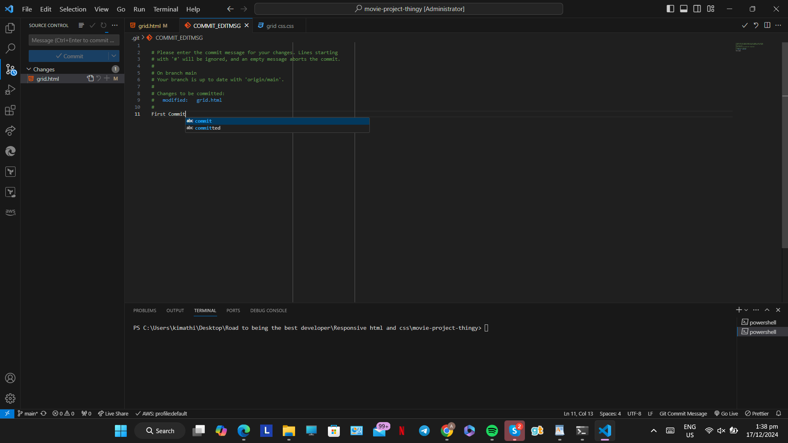

- After syncing the changes from the first commit, I can also view the changes in my Github account.
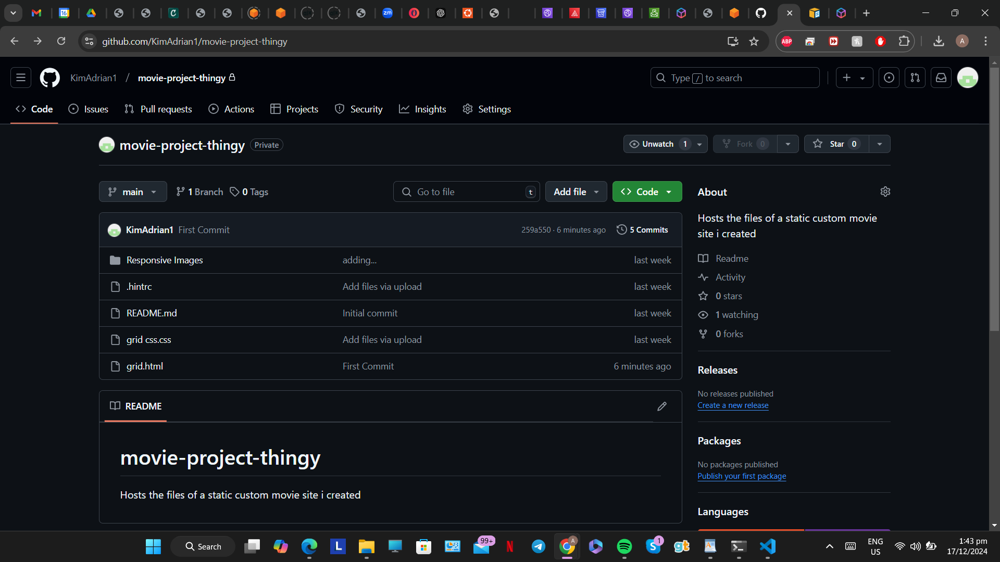
Now that we have our Github repository set, we need to head into the AWS console and create an S3 bucket and a CloudFront distribution with OAC and the S3 bucket as the origin. It is important to change the cache time-to-live(ttl) of the distribution to a feasible time to reflect changes to the end user, as the default ttl is 24 hours(86,400 seconds). I will be using 20 minutes for this project. The default root object should be grid.html.
- The bucket to be used as the destination for the pipeline

- The CloudFront distribution which would serve the website from the S3 bucket
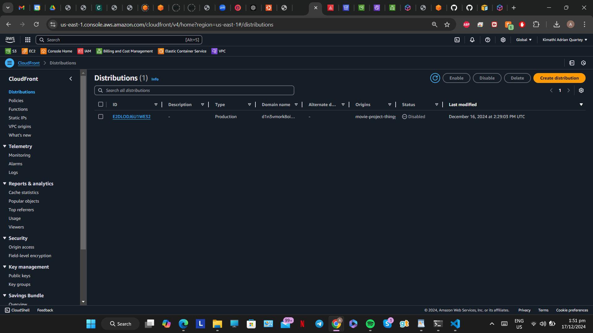
- Next we need to give AWS access to the Github account by creating a connection under Developer tools.


- After naming and creating the connection, you'll be prompted to login and authorize the connection. I'm already logged into my Github account in my browser from the screenshot below so I only needed to authorize.
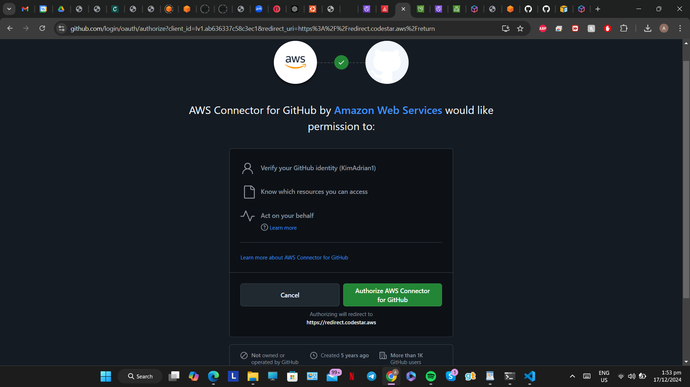
- We need to install a new application on Github from the following screenshot. For security reasons I'm granting Github access to only the repository being used for this project.
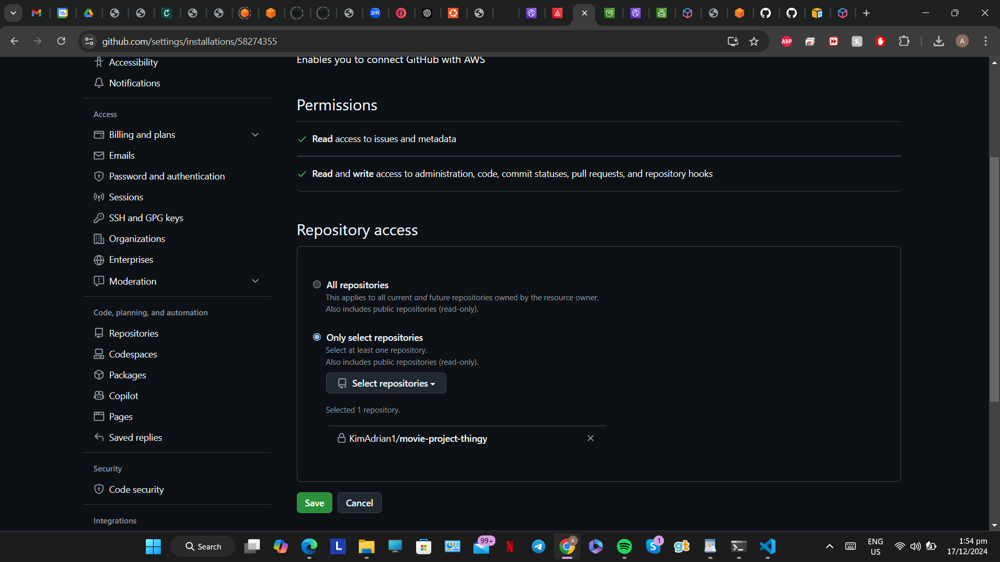
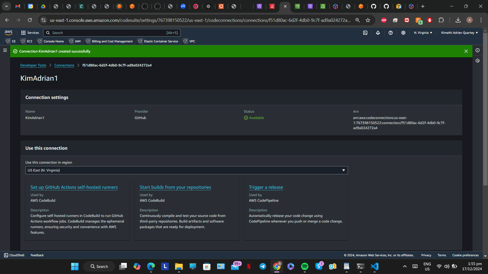
- Our Github connection is now established so we can proceed with creating a custom pipeline under CodePipeline.
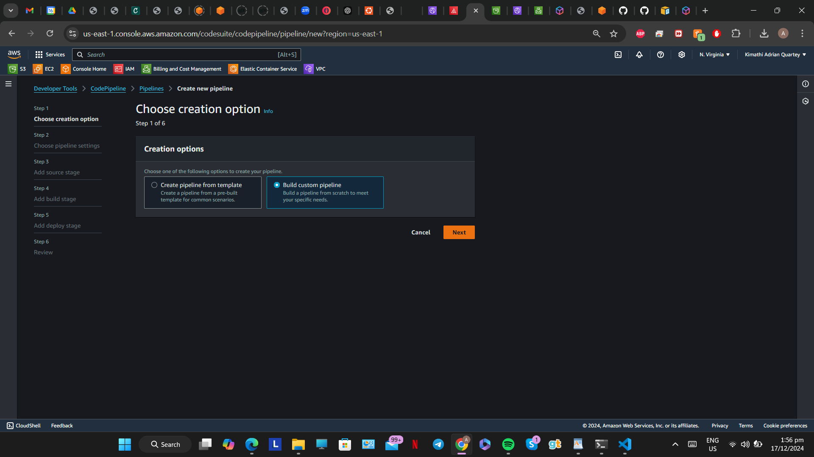
- We name the pipeline, choose a service role for access to the S3 bucket and use the “Queued” execution mode

- At the source stage, select Github via app as the source
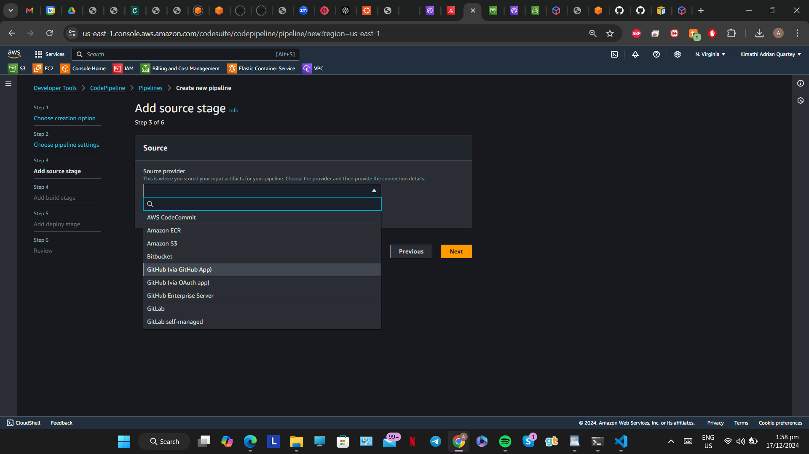
- From the list of connections, select the name of the connection created earlier and the repository hosting the website files.

- For the trigger choose “No filter”. Skip the build stage after this as no build is required for this static website.

- In the deploy stage, choose Amazon S3 as the deploy stage. The region should be the region where the bucket is located. Select the bucket created earlier and check the “Extract file before deploy option”.
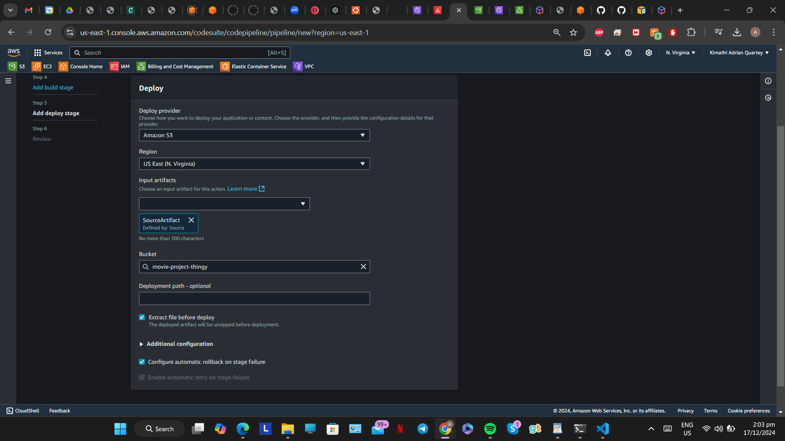
- We can finally create the pipeline now


- Viewing the S3 bucket created earlier, you'll observe that the contents of our Github repo have been automatically deployed to the bucket by CodePipeline.

- When you copy the URL of the CloudFront distribution to your browser, the website should be displayed.


- In the screenshot above, the drop down menu only has the word “anime” representing all options. We’ll change this in VScode along with the background color in the CSS file then commit and push the changes to Github. Once this happens CodePipeline should automatically update the S3 bucket and CloudFront would reflect the changes in about 20 minutes.
- In the HTML file I have changed the options to: anime, comedy, fantasy, horror, musical and sci-fi. In the CSS file, I’ve changed the color of <main> to a shade of green. Then we can commit and sync(push) the changes.
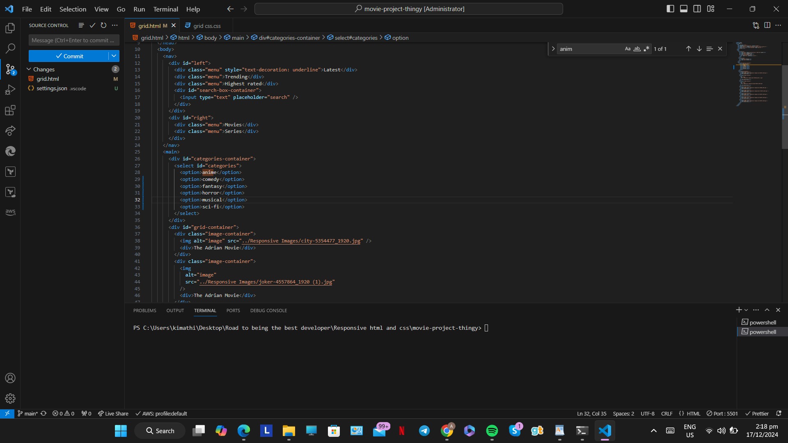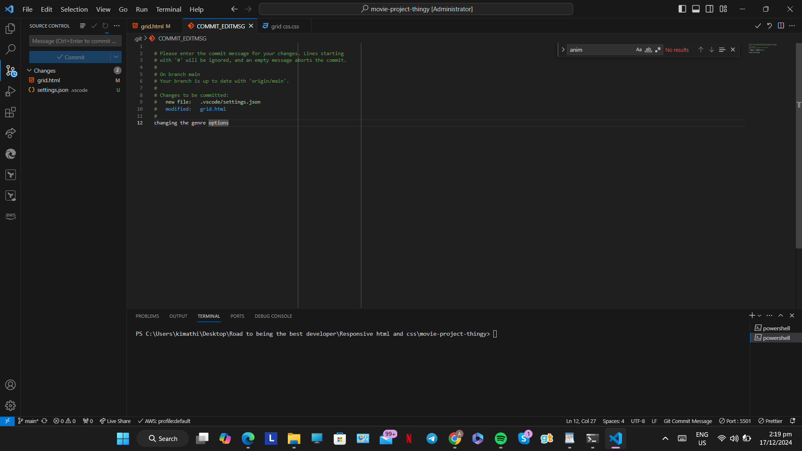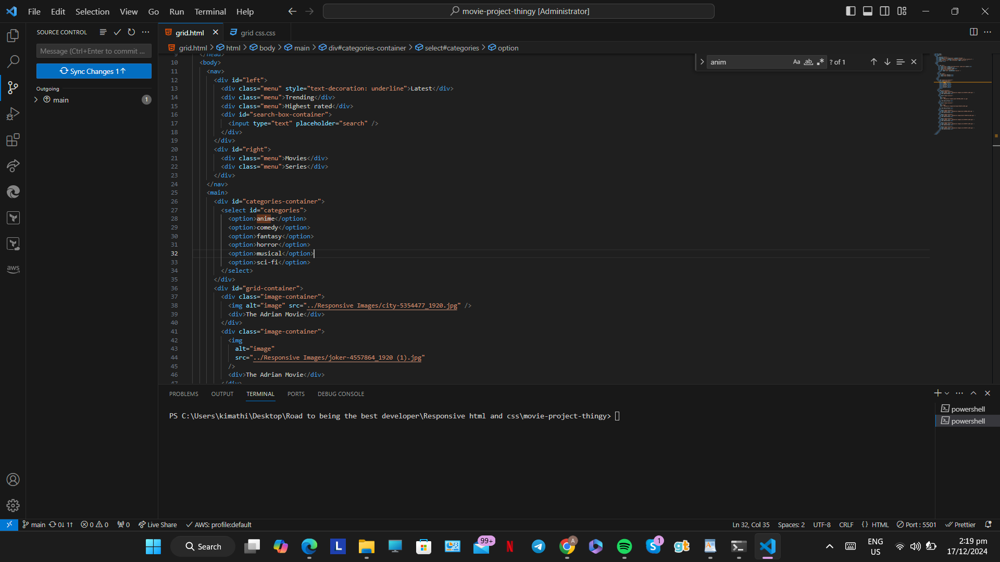
- The changes along with the commit message are automatically detected by CodePipeline.
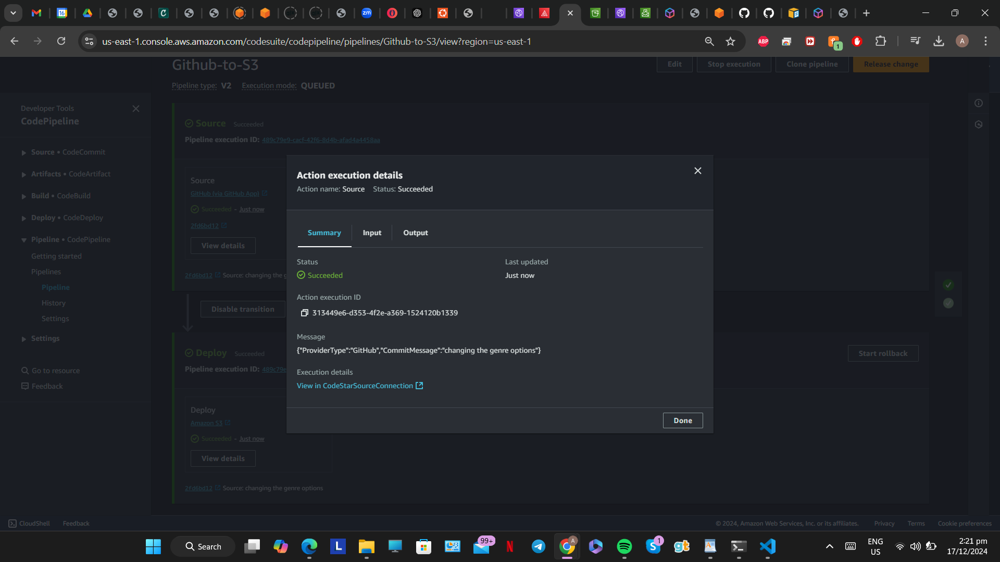
- After 20 minutes when the previous cache is deleted, CloudFront would reflect the changes.

Some Key notes
- You can set the CloudFront caching policy to “CachingDisabled” if your website requires immediate change for your end users upon pushes made in Github. This would incur more costs though.
Future plans
There is a fully managed AWS service named Amplify that embodies all the core functionalities of this project. In my next project, I'll be diving into the workings of Amplify and investigating how different AWS solutions can incur different costs, this will be based on a real world AWS project I have undertaken.